4 meses – 3 años
Escuela Infantil
Edificio propio con proyecto educativo diferenciado. El juego, las rutinas y el apego como base del aprendizaje.
- Atención individualizada
- Estimulación temprana
- Aula sensorial
- Cocina propia
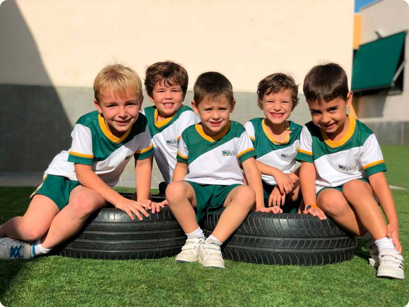
Boadilla del Monte · Madrid
Centro concertado, laico y abierto a todo tipo de alumnado. Acompañamos a cada alumno desde los cuatro meses hasta la Universidad, con un proyecto educativo propio y un equipo docente estable.
Plazos, requisitos y solicitud para las etapas concertadas y privadas.
Ver procesoReserva una visita guiada y descubre el centro por dentro.
Pedir citaDos cocinas propias y hasta 10 menús adaptados a cada necesidad.
Ver menúsGrado Medio y Grado Superior con prácticas en empresa.
Ver oferta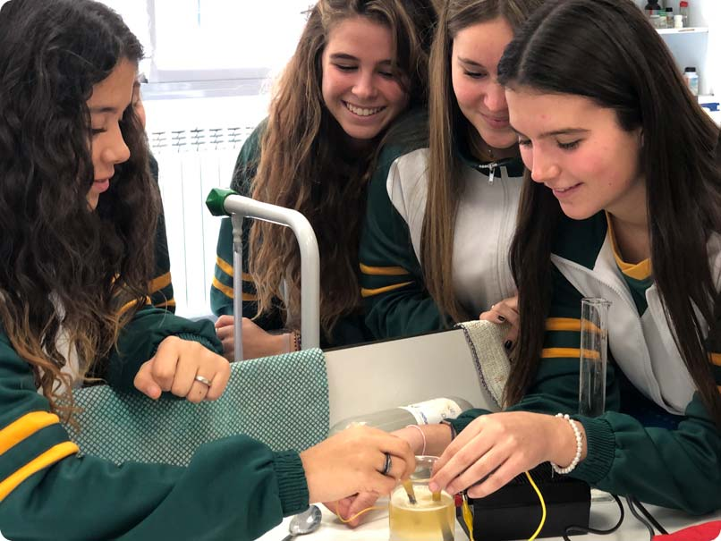
Quiénes somos
El Colegio Quercus es un centro concertado, laico y abierto a todo tipo de alumnado, sin discriminación alguna. Queremos que, en el seno de un clima educativo adecuado, se haga realidad el sentimiento colectivo de comunidad escolar y la formación integral de los alumnos.
La cooperativa Avantis, titular del colegio, surge del impulso de un grupo de profesionales de la educación decididos a poner en marcha un centro docente en el que se plasme un proyecto educativo propio.
Oferta educativa
Acompañamos a tus hijos durante todo el periodo de escolarización, desde los cuatro meses hasta la Universidad, sin cambiar de centro.
Edificio propio con proyecto educativo diferenciado. El juego, las rutinas y el apego como base del aprendizaje.
Segundo ciclo concertado. Inglés desde los dos años en grupos reducidos y una fuerte apuesta por la lectoescritura.
Jornada de seis horas que permite ampliar contenidos en inglés, expresión oral, laboratorios y tecnología.
Etapa concertada con acción tutorial preventiva, programa TEI y orientación académica desde 3.º de la ESO.
Etapa privada en las modalidades de Ciencias —con itinerarios de Ciencias de la Salud e Ingeniería y Arquitectura— y Humanidades y Ciencias Sociales.
Grado Medio y Grado Superior con formación en centros de trabajo, titulación oficial y alta empleabilidad.
Por qué elegirnos
Llega la hora de matricular a tu hijo en un nuevo centro escolar y surgen las dudas. Estas son algunas de las razones por las que las familias eligen el Quercus.
Desde 1 año hasta la Universidad, un proyecto contrastado que abarca todas las etapas educativas.
Más allá de los contenidos: fortalecemos la autoestima y educamos en valores.
Cercanía e implicación del equipo docente: la ya famosa «Familia Quercus».
Agendas electrónicas, plataformas propias, tutorías personalizadas y reuniones de familias.
Programas de inmersión lingüística y actividades que amplían el contenido en inglés y alemán.
Aula LEGO Innovation Studio, aula multisensorial y metodologías activas en todas las etapas.
Vida Quercus
Innovación, sostenibilidad, solidaridad e internacionalización. Así completamos la formación académica de nuestro alumnado.
Actualidad
Lo último que ocurre en el colegio, contado por su comunidad educativa.
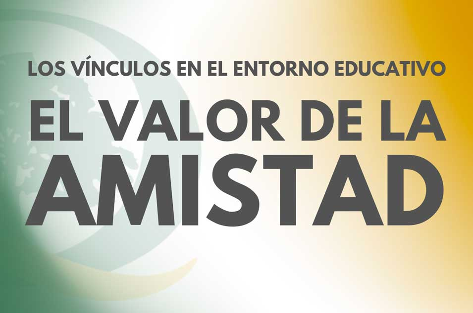
El nacimiento de los vínculos amistosos en el entorno escolar. Más allá del estudio de matemáticas o lengua, los centros escolares son escenarios perfectos para esas amistades que nos acompañan toda la vida.
Leer más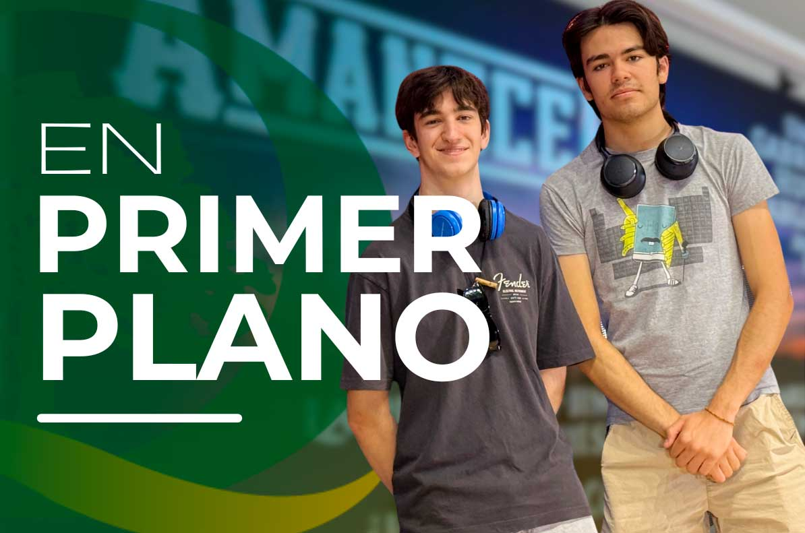
Por segundo año consecutivo, Hugo Delgado, Pablo Momblán y Gabriel Lancha, alumnos de 2.º de Bachillerato, se han alzado con el primer premio de la Olimpiada Filosófica de Madrid.
Leer más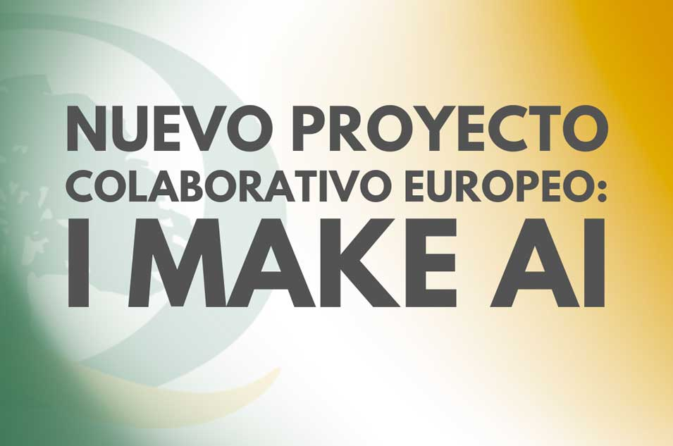
Durante este curso el centro ha colaborado con una red de escuelas alemanas STEM en el proyecto «I make AI», una propuesta colaborativa que ha llevado la inteligencia artificial al aula.
Leer más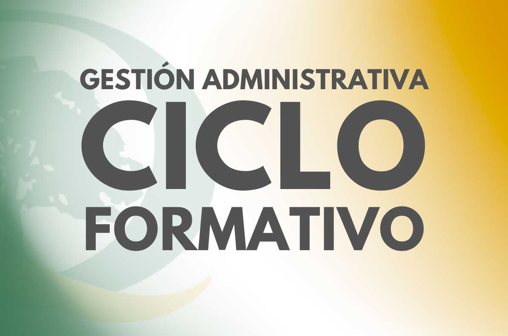
Novedad para el curso 2026/2027 en horario de mañana: incorporamos a nuestra oferta el Ciclo de Grado Medio en Gestión Administrativa.
Leer más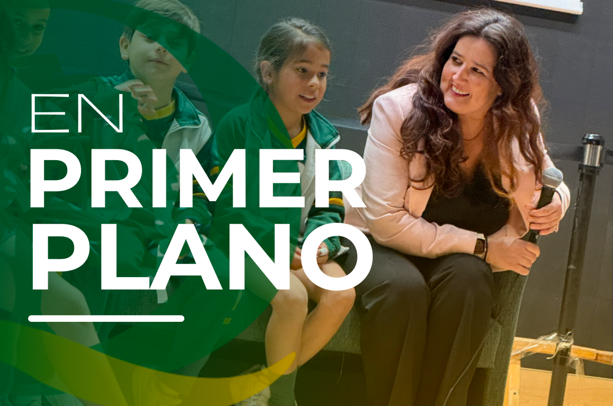
Nuestros estudiantes de la revista Quercuriosos conversan con la periodista sobre el oficio de informar y los retos del periodismo actual.
Leer más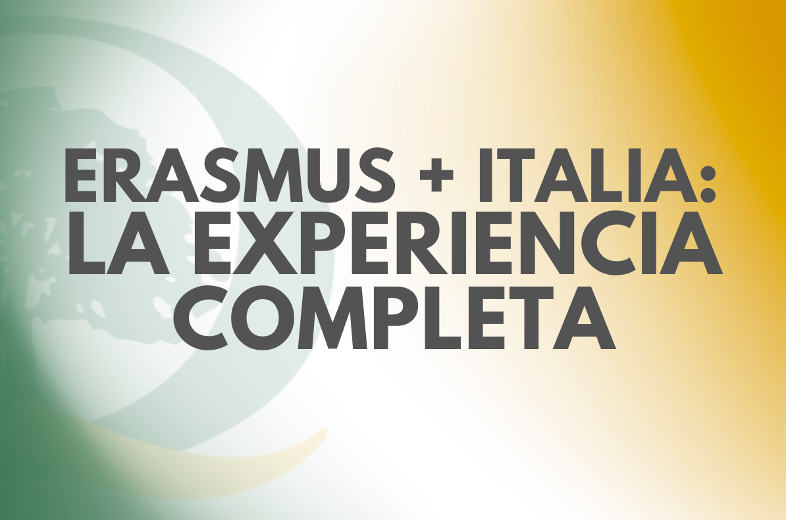
Crónica del intercambio europeo que ha llevado a nuestro alumnado a convivir, aprender y trabajar junto a estudiantes italianos.
Leer másDestacados
Reconocimientos
Desde el Premio Nacional «Laurel de Oro» hasta el sello de UNICEF que nos acredita como escuela amiga.
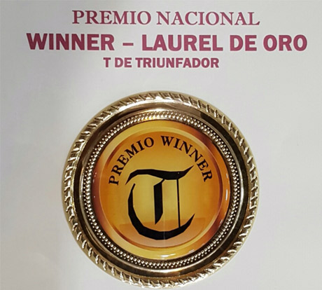
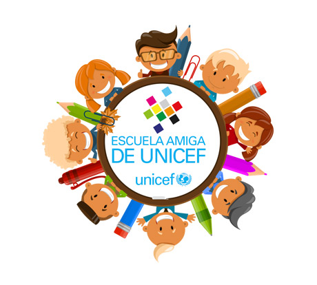

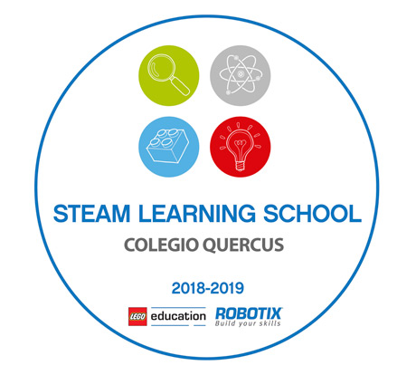
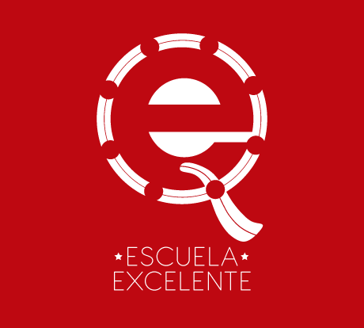

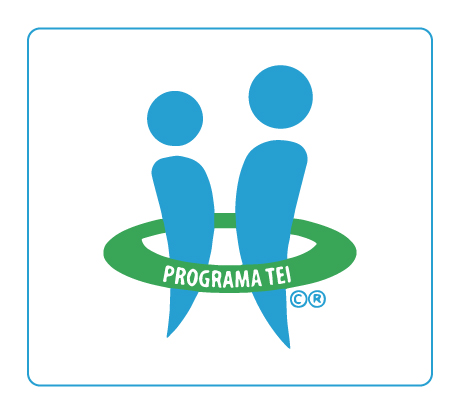
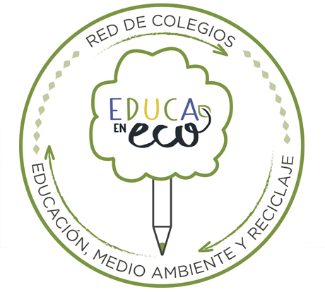
Admisiones 2026 / 2027
Rellena el formulario y contactaremos contigo lo antes posible para organizar una visita guiada por el centro.